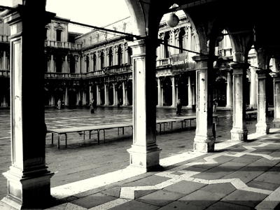
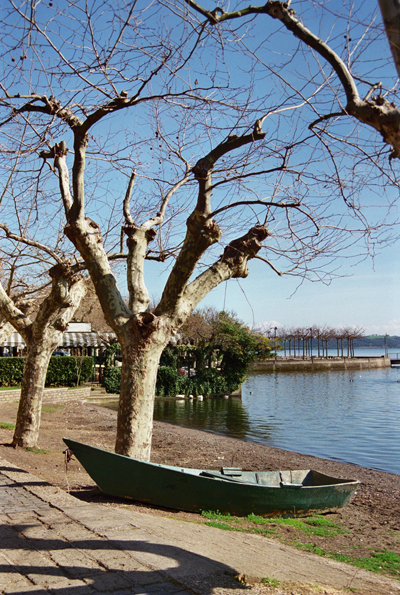
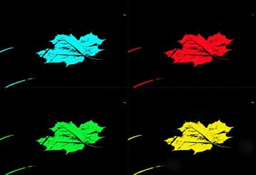
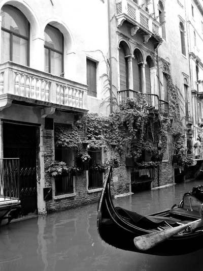
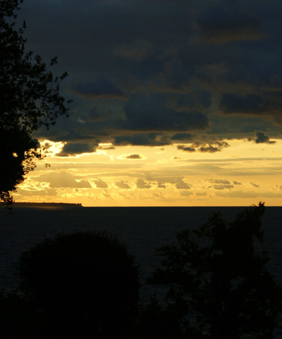
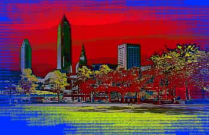
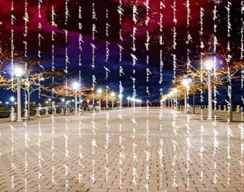

| Home | Past Exhibits | Posters For Sale | Contact | Application | Follow Us on |
|---|
Two PerspectivesMarcello Mellino & Joseph ZupkoArtist Perspective and discussion August 3rd. (7 PM-9 PM) |
||
|---|---|---|
July 8 to September 5, 2011 |
||
Photography by Marcello Mellino  |
||
Marcello Mellino has developed his interest in photography over the years mostly with personal studies and self-training. He is particularly interested in landscapes, nature and “ old world “ photo-imagery; he often travels to Italy and Europe and has recently released his first of a series DVD titled “ Bella Italia”, a collection of Italian images reflecting the people, the lifestyle and the atmosphere found in villages and small Italian towns. Being a sailor at heart, he has a great interest in lake Erie and surrounding waters, and has recently printed a series called “mesmERIEized “ , consisting of 60 mesmerizing images of sunsets and views of the lake throughout all four seasons. A one-man exhibit just opened at the Custom Picture Framing Gallery,15723 Madison Ave. in Lakewood, Ohio, and will be on display until April 29th.; prior to this ,Marcello has had several solo exhibits at local galleries and has participated in numerous group art shows as well. He has been involved for several years with the Lakewood Photographic Society, and is a Board Member at BayArts in Bay Village. At Gestures you will find several Lake images as well as Florida water related prints . Visit the WebSite: opbmm.com
|
Joseph Anthony Zupko |
|
|  |  | |
|  |  |
|
|  |  | |
 |
 | |
 |
||
 |
||